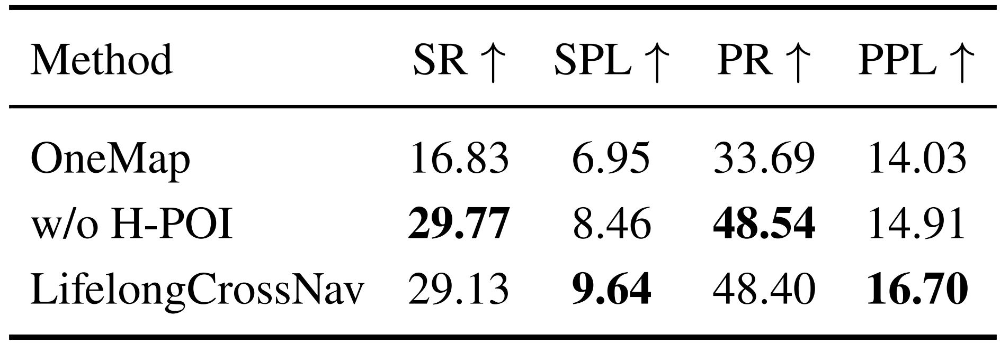
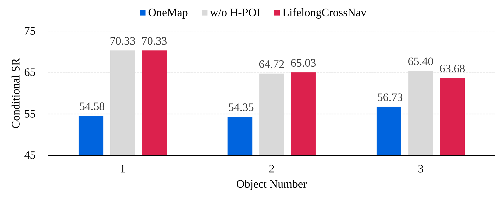
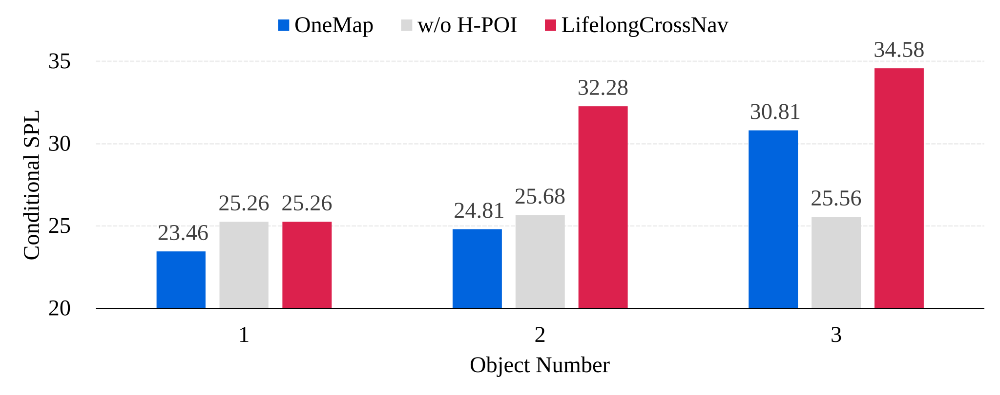
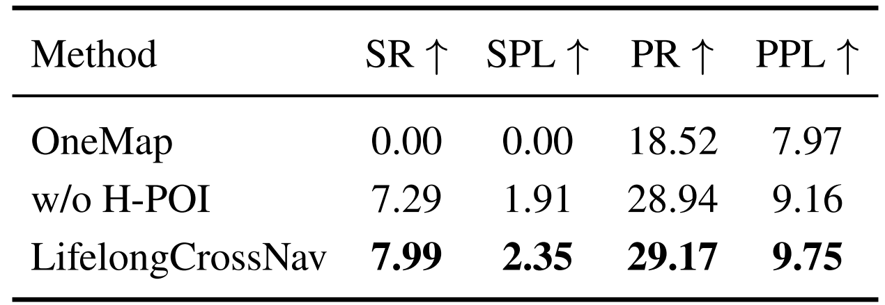
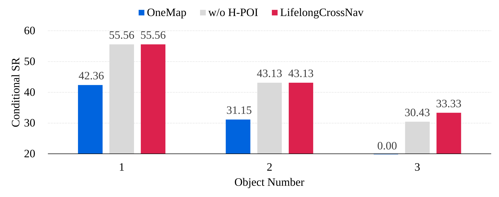
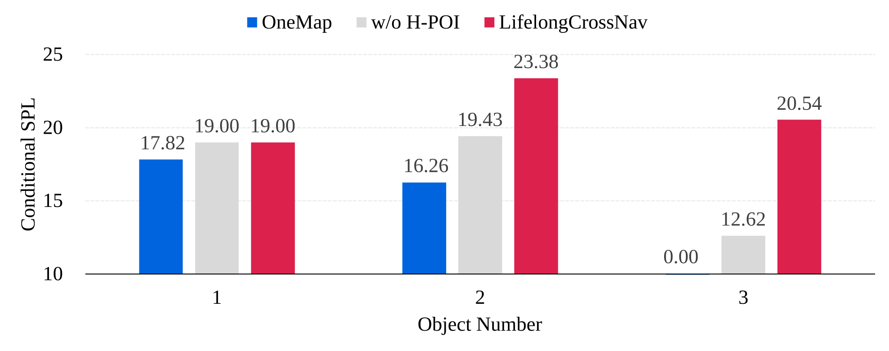

Video demonstrations
Highlight: Cross-Floor Multi-Object Navigation
Video 2
Video 3
Video 4
Habitat simulator demonstrations of sequential object search. Every example includes at least one floor transition.
The task
Abstract
LifelongCrossNav studies sequential multi-object ObjectNav in unknown multi-floor indoor environments. The agent receives an ordered sequence of object-goal queries and continuously maintains a shared sparse 3D semantic voxel memory. This memory accumulates geometric structure, traversability states, and vision-language features, allowing later queries to reuse previously discovered scene information instead of rebuilding the map. To support navigation across floors, LifelongCrossNav integrates support-aware 3D traversability mapping, stair-specific perception, and direction-aware stair traversal within a unified navigation policy. We also introduce HM3D-MFMON, a benchmark for sequential multi-floor multi-object navigation built on HM3D scenes. Experiments show that LifelongCrossNav consistently outperforms a persistent planar semantic-map baseline, demonstrating the value of persistent 3D semantic memory and cross-floor traversability modeling.
Contributions
A benchmark, a unified system, and measurable gains
01
HM3D-MFMON Benchmark
927 three-goal episodes from 36 multi-floor HM3D scenes, including a 288-episode Cross-Floor-Required subset and a post-hoc stage-wise evaluation protocol.
02
Persistent 3D Memory
A shared sparse voxel representation unifies support-aware geometry, accumulated vision-language features, stair perception, and historical semantic retrieval.
03
Validated Performance Gains
Experiments demonstrate improved multi-object and cross-floor navigation over a persistent planar baseline, while History POIs improve path efficiency for later goals.
Method
Overview of LifelongCrossNav

Evaluation
Results on HM3D-MFMON
01 / Full benchmark
Results on 927 Episodes
Overall Metrics

Conditional Success Rate

Conditional SPL

Performance on all 927 three-goal episodes across 36 multi-floor HM3D scenes.
02 / Hard subset
Results on 288 Cross-Floor-Required Episodes
Overall Metrics

Conditional Success Rate

Conditional SPL

Performance on the Cross-Floor-Required subset, where completing the full target sequence requires at least one floor transition.
Reference
Citation
If you find LifelongCrossNav or HM3D-MFMON useful in your research, please consider citing our work.
BibTeX will be updated when the paper is publicly available.
@article{li2026lifelongcrossnav,
title = {LifelongCrossNav: Persistent 3D Semantic Memory for
Cross-Floor Multi-Object Navigation},
author = {Li, Zehui and Sun, Zihao and Xu, Jiawei and He, Zheqi and
Zhang, Xiaoqiang and Zheng, Jing-Shu and Liu, Lu and
Gao, Dahui and Chen, Xiuwan},
journal = {arXiv preprint arXiv:XXXX.XXXXX},
year = {2026}
}